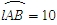

The arc length is the measure of the distance along the curved line making up the arc. It is longer than the straight line distance between its endpoints (which would be a chord)
There is a shorthand way of writing the length of an arc:

This is read as "The length of the arc AB is 10". The lower case L in the front is short for 'length'. However, in many cases the letter L and even the curved line over the AB is left out if there is no doubt about what is meant.
The formula the arc measure is:
where:
C is the
central angle of the arc in
degrees
R is the
radius of the arc
π is Pi, approximately 3.142
Recall that 2πR is the circumference of the whole circle, so the formula simply reduces this by the ratio of the arc angle to a full angle (360). By transposing the above formula, you solve for the radius, central angle, or arc length if you know any two of them.
If the central angle is is
radians,
the formula is simpler:
where:
C is the central angle of the arc in
radians.
R is the
radius of the arc
This is the same as the degrees version, but in the degrees case, the 2π/360 converts the degrees to radians.
* Radians are another way of measuring angles instead of degrees. One radian is approximately 57.3°
For more on this see Radians definition.